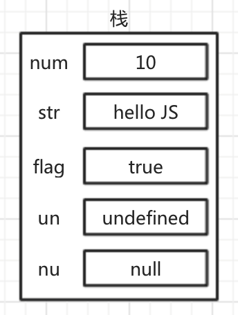

值类型和引用类型
1.值类型(基本数据类型)
数值类型布尔类型undefinednull字符串
值类型是存储在栈（stack）中的简单数据，也就是说，它们的值直接存储在变量访问的位置。
var num = 10;
var str = "hello JS";
var flag = true;
var un = undefined;
var nu = null;
上面定义的这些值类型的数据在内存中的存储如下

2.引用类型(复合数据类型)
对象数组函数
存储在堆（heap）中的对象，也就是说，存储在变量处的值是一个指针（point），指向存储对象的内存处。
var arr = [1, 2, 3];
var p1 = {name:"张三", age:18};
var p2 = {
name:"李四",
age:50,
son:{
name:"李小一",
age:18
}
};
var p3 = {
name:"王五",
age:50,
children:[
{
name:"王小一",
age:20
},
{
name:"王小二",
age:15
},
{
name:"王小三",
age:12
}
]
}
上面定义的这些引用类型的数据在内存中的存储如下